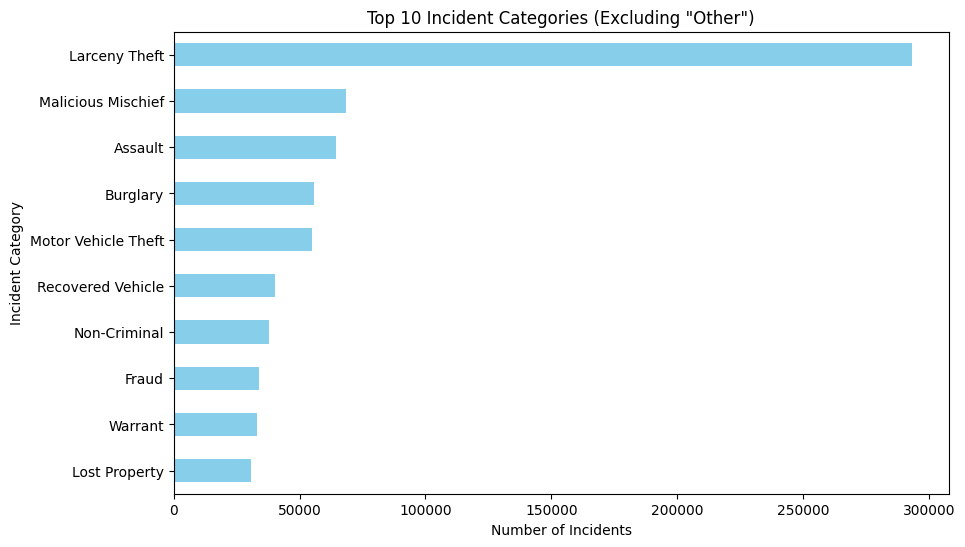
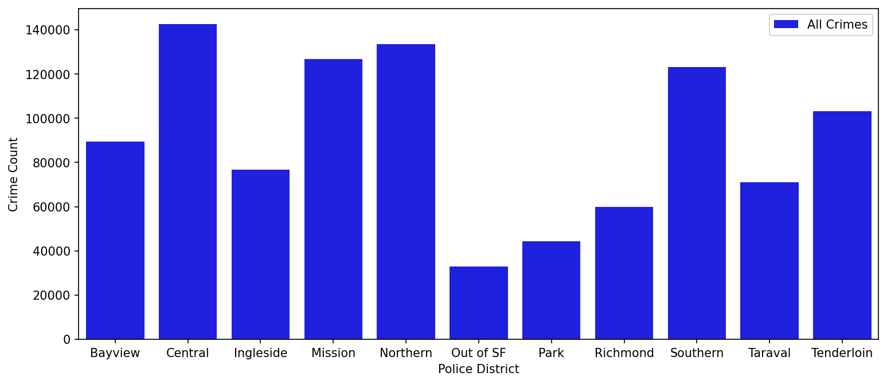
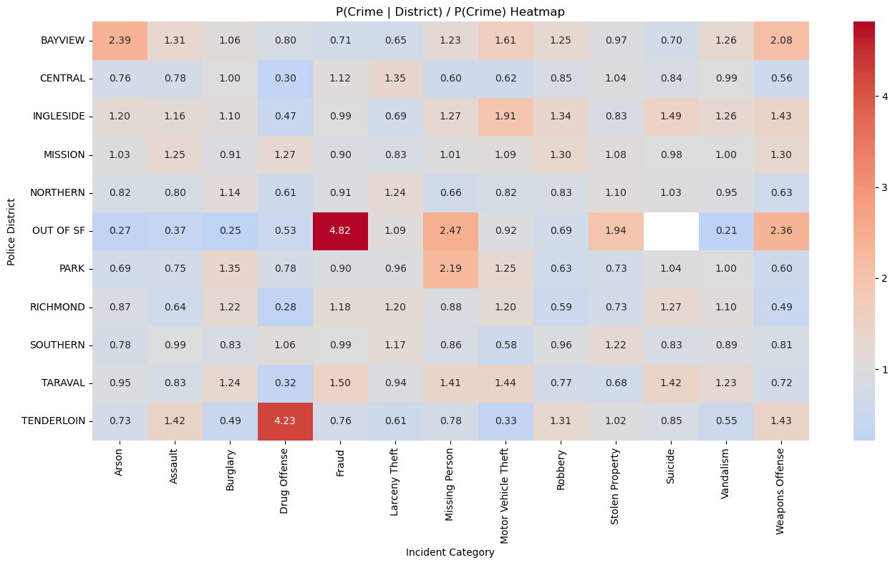

📊 Project Overview
This project explores crime data from San Francisco, focusing on patterns across districts, time, and crime categories. By combining static visual summaries with interactive plots, we aim to uncover meaningful trends and behavioral patterns.
📌 Static Insights
Top 10 Crime Categories
This chart highlights the most frequent crime categories, giving a quick overview of dominant crime types in the city.

Total Crime Count by District
Crime is not evenly distributed. This visualization shows which districts experience higher overall crime activity.

Relative Crime Probability
This heatmap compares the probability of specific crimes within each district relative to overall crime rates, revealing district-specific crime patterns.

⚡ Interactive Analysis
Saturday Drug Activity
This heatmap reveals how drug-related incidents fluctuate throughout a Saturday.
Weekly Assault Activity
Assault patterns across midweek to weekend (Wednesday–Sunday) show how behavior changes over time.
Assault Likelihood by District
This map highlights which districts have higher likelihoods of assault incidents.
Hourly Crime Distribution
Explore how crime types vary across the day. Toggle categories to compare patterns.
🧠 Key Takeaways
Crime patterns in San Francisco are shaped by both geography and time. Certain districts exhibit strong associations with specific crime types, while temporal trends reveal peaks during weekends and late hours. Interactive visualizations allow deeper exploration of these dynamics.